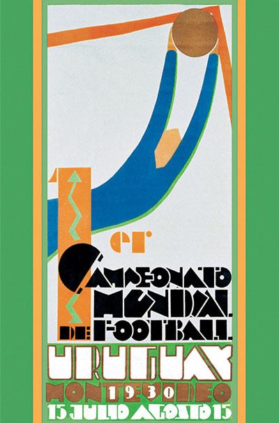

1930
La Selección Uruguaya fue la organizadora de la 1era edición de la Copa del Mundo de 1930, donde participaron 13 selecciones, y en la cual terminamos siendo vencedores frente a Argentina en una final que terminó 4-2.

Poster oficial de la competición.
Integrantes del plantel de 1930
- Enrique Ballesteros - Golero
- Miguel Cappuccini - Golero
- Domingo Tejera - Defensor
- Emilio Recoba - Defensor
- Jose Nasazzi (C) - Defensor
- Ángel Romano - Defensor
- José Leandro Andrade - Mediocampista
- Lorenzo Fernandez - Mediocampista
- Álvaro Gestido - Mediocampista
- Miguel Ángel Melogno - Mediocampista
- Carlos Riolfo - Mediocampista
- Conduelo Piriz - Mediocampista
- Pedro Petrone - Delantero
- Héctor Castro - Delantero
- Zolio Salombide - Delantero
- Pablo Dorado - Delantero
- José Pedro Cea - Delantero
- Héctor Scarone - Delantero
- Santos Urdinarán - Delantero
- Victoriano Santos Iriarte - Delantero
- Juan Peregrino Anselmo - Delantero
- Juan Carlos Calvo - Delantero
- D.T Alberto Supicci